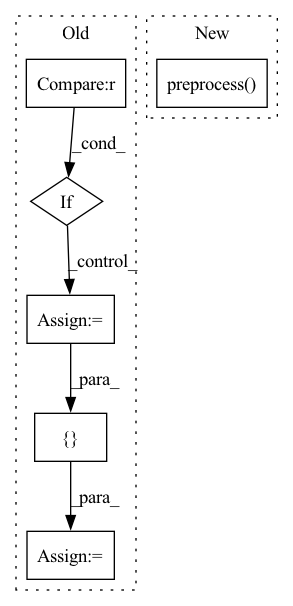

Pattern ID :6758
Before Change
super().__init__(adj, features, labels, device=device, seed=seed)
if normalize_rate is not None :
adj = self._normalize_adj(adj, normalize_rate)
if normalize_features:
features = self._normalize_features(features)
adj, features = self._to_tensor([adj, features])
begin_time = perf_counter()
with tf.device("CPU:0"):
features = SGConvolution(order=order)([ features, adj = features
self.order = order
self.precompute_time = end_time - begin_time
After Change
self.order = order
self.normalize_rate = normalize_rate
self.normalize_features = normalize_features
self.preprocess( adj, features)
def preprocess(self, adj, features):
if self.normalize_rate is not None:In pattern: SUPERPATTERN
Frequency: 3
Non-data size: 6
Instances Fragment ID: 23120960
Project Name: edisonleeeee/graphgallery
Commit Name: 3f727abf81f2512238c46ff366c46c93735415eb
Time: 2020-03-12
Author: cnljt@outlook.com
File Name: nn/models/sgc.py
M Class Name: SGC
N Class Name: SGC
M Method Name: __init__(9)
N Method Name: __init__(9)
M Parent Class: SupervisedModel
N Parent Class: SupervisedModel
M File Name: nn/models/sgc.py
N File Name: nn/models/sgc.py
M Start Line: 20
M End Line: 38
N Start Line: 20
N End Line: 23
Before Change
super().__init__(adj, features, labels, device=device, seed=seed)
if normalize_rate is None :
adj = adj + sp.eye(adj.shape[0])
else:
adj = self._normalize_adj(adj, normalize_rate)
if normalize_features:
features = self._normalize_features(features)
self.features, self.adj = self._to_tensor([ features, adjAfter Change
self.normalize_rate = normalize_rate
self.normalize_features = normalize_features
self.preprocess( adj, features)
def preprocess(self, adj, features):
if self.normalize_rate is None: Fragment ID: 23120957
Project Name: edisonleeeee/graphgallery
Commit Name: 3f727abf81f2512238c46ff366c46c93735415eb
Time: 2020-03-12
Author: cnljt@outlook.com
File Name: nn/models/gat.py
M Class Name: GAT
N Class Name: GAT
M Method Name: __init__(8)
N Method Name: __init__(8)
M Parent Class: SupervisedModel
N Parent Class: SupervisedModel
M File Name: nn/models/gat.py
N File Name: nn/models/gat.py
M Start Line: 18
M End Line: 26
N Start Line: 18
N End Line: 20
Before Change
(self.batch_adj, self.batch_features, self.batch_labels,
self.cluster_member, self.mapper) = partition_graph(adj, features, labels, graph, n_cluster=n_cluster)
if normalize_rate is not None :
self.batch_adj = self._normalize_adj(self.batch_adj, normalize_rate)
self.batch_adj, self.batch_features = self._to_tensor([ self.batch_adj, self.batch_featuresAfter Change
self.n_cluster = n_cluster
self.normalize_rate = normalize_rate
self.normalize_features = normalize_features
self.preprocess( adj, features, graph)
def preprocess(self, adj, features, graph=None):
if self.normalize_features: Fragment ID: 23120958
Project Name: edisonleeeee/graphgallery
Commit Name: 3f727abf81f2512238c46ff366c46c93735415eb
Time: 2020-03-12
Author: cnljt@outlook.com
File Name: nn/models/clustergcn.py
M Class Name: ClusterGCN
N Class Name: ClusterGCN
M Method Name: __init__(10)
N Method Name: __init__(10)
M Parent Class: SupervisedModel
N Parent Class: SupervisedModel
M File Name: nn/models/clustergcn.py
N File Name: nn/models/clustergcn.py
M Start Line: 24
M End Line: 37
N Start Line: 24
N End Line: 27